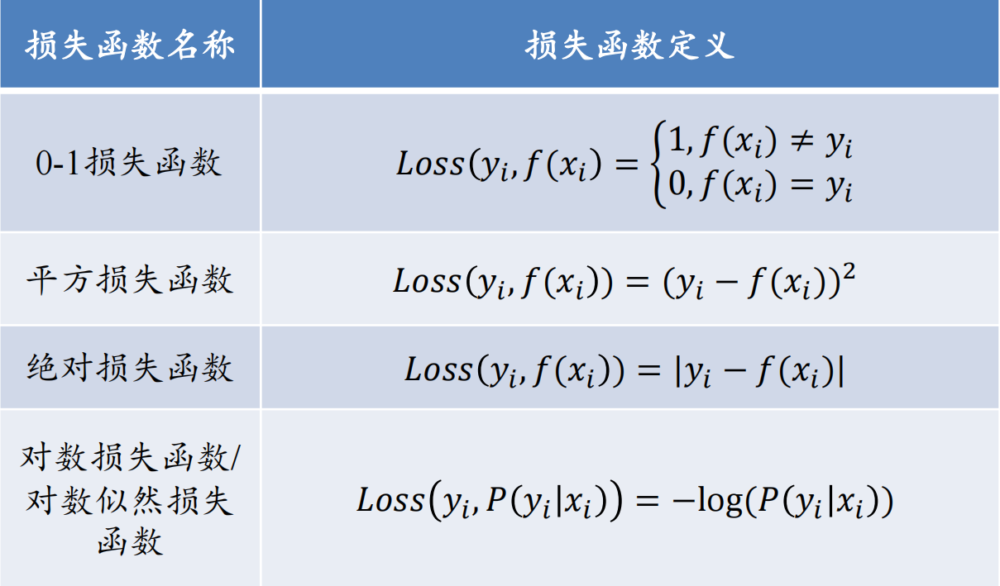
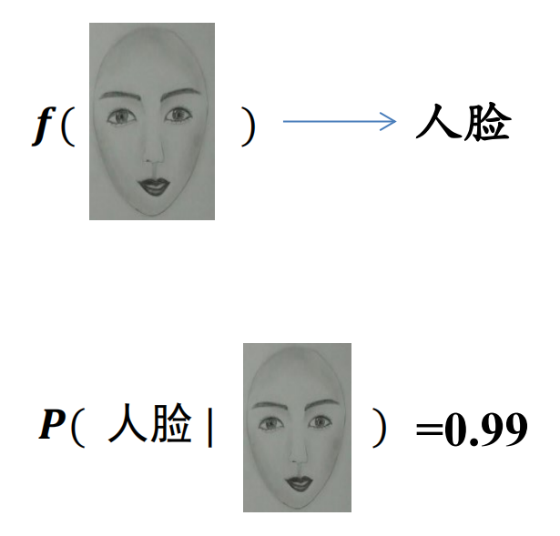
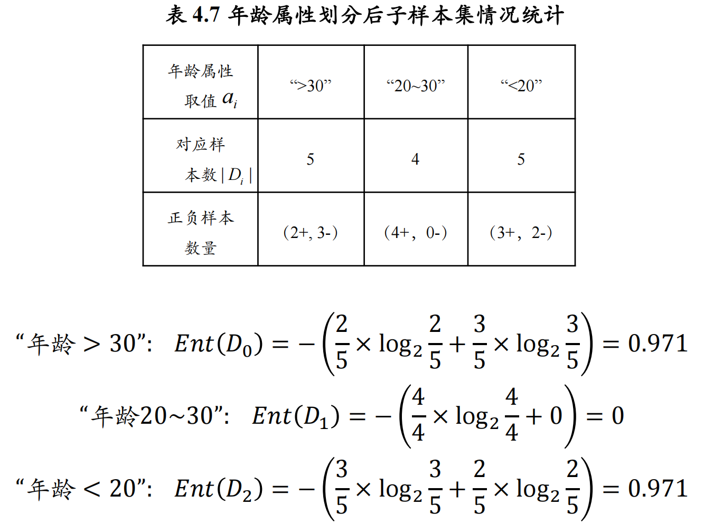
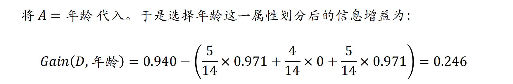

# Ch4 机器学习
# 监督学习
- 标注数据
- 学习模型
- 损失函数
典型的损失函数

经验风险 (empirical risk)
- 训练集中数据产生的损失。
- 经验风险越小说明学习模型对训练数据拟合程度越好。
期望风险 (expected risk):
- 当测试集中存在无穷多数据时产生的损失。
- 期望风险越小，学习所得模型越好。
经验风险最小化
f∈Φminn1i=1∑nLoss(yi,f(xi))
期望风险最小化
f∈Φmin∫x×yLoss(y,f(x))P(x,y)dxdy
模型泛化能力与经验风险、期望风险的关系
| 经验风险小（训练集上表现好） |
期望风险小（测试集上表现好） |
泛化能力强 |
| 经验风险小（训练集上表现好） |
期望风险大（测试集上表现不好） |
过学习（模型过于复杂） |
| 经验风险大（训练集上表现不好） |
期望风险大（测试集上表现不好） |
欠学习 |
| 经验风险大（训练集上表现不好） |
期望风险小（测试集上表现好） |
“神仙算法” 或 “黄粱美梦” |
结构风险最小化 (structural risk minimization)
为了防止过拟合，在经验风险上加上表示模型复杂度的正则化项 (regularizer) 或惩罚项 (penalty term):
f∈Φminn1i=1∑nLoss(yi,f(xi))+λJ(f)
- 经验风险: n1∑i=1nLoss(yi,f(xi))
- 模型复杂度: λJ(f)
监督学习方法又可以分为 生成方法 (generative approach) 和 判别方法 (discriminative approach)。所学到的模型分别称为生成模型 (generative model) 和判别模型 (discriminative model)

# 回归分析
# 线性回归
yi=axi+b(1≤i≤n)
a=∑i=1nxi2−nxˉ2∑i=1nxiyi−nxˉyˉ
b=yˉ−axˉ
f(xi)=a0+j=1∑Dajxi,j=a0+aTxi
a 是要求的参数，x 是输入的数据，f 是预测值。
为了方便，使用矩阵来表示所有的训练数据和数据标签。
X=[x1,...,xm],y=[y1,...,ym]
最小化均方误差得到：
a=(XXT)−1XTy
- 逻辑斯蒂回归 / 对数几率回归
线性回归一个明显的问题是对离群点导致模型建模不稳定，使结果有偏，为了缓解这个问题（特别是在二分类场景中）带来的影响，可考虑逻辑斯蒂回归
逻辑斯蒂回归就是在回归模型中引入 sigmoid 函数的一种非线性回归模型
# 逻辑斯蒂回归 (Logistic Regression)
逻辑斯蒂回归（logistic regression）就是在回归模型中引入 sigmoid 函数的一种非线性回归模型。Logistic 回归模型可如下表示：
y=1+e−z1=1+e−(wTx+b)1
其中 y∈(0,1)，z=wTx+b。
这里 1+e−z1 是 sigmoid 函数，x∈Rd 是输入数据，w∈Rd 和 b∈R 是回归函数的参数。
逻辑斯蒂回归多用于二分类问题
Sigmoid 函数将任意实数映射到区间 (0,1)，这正好符合 “概率” 的取值范围，所以函数的输出 y 可以被解释为输入数据 x 属于正例的概率
因此我们可以将输出 y 解释为：
在给定输入特征 x 的条件下，该样本属于正类（例如类别 1）的概率。
即：
y=P(y=1∣x)
如果 P(y=1∣x) 表示给定输入 x 属于正类的概率，则 1−P(y=1∣x) 表示属于负类的概率。
1−P(y=1∣x)P(y=1∣x) 就是正类相对于负类的优势比。所以 > 1 就归为正类，反之就是负类。
logP(y=0∣x)P(y=1∣x)=wTx+b>log1=0
从这里可以看出，logistic 回归本质上是一个线性模型。在预测时，可以计算线性函数wTx+b 取值是否大于 0 来判断输入数据 x 的类别归属
为了找到最优参数 w 和 b，我们使用最大似然估计，假设每个样本独立同分布，则
…
公式懒得敲了，
为什么基于相关性的方法可能会导致模型的不可解释性和不稳定性
- 因果特征和非因果特征
- Making V⊥Y: 最终目标是让非因果特征 V 与输出 Y 独立，即消除虚假相关性，使得模型更加稳定和可解释
# 决策树
决策树是一种通过树形结构来进行分类的方法
- 信息熵（entropy）是度量样本集合纯度最常用的一种指标
假设有一个 K 个信息（类别），其组成了集合样本 D，记第 k 个信息（类别）发生的概率为pk(1≤k≤K)。如下定义这 K 个信息的信息熵：
Ent(D)=−k=1∑Kpklog2pk
==Ent(D) 值越小，表示 D 包含的信息越确定，也称 D 的纯度越高。== 所有pk 累加起来的和为 1。
- 信息增益：衡量使用某个属性进行划分后，数据集不确定性减少的程度
得到信息熵后可以进一步计算信息增益：
Gain(D,A)=Ent(D)−i=1∑n∣D∣∣Di∣Ent(Di)


ID3 决策树学习算法 [Quinlan, 1986] 以信息增益为准则来选择划分属性
目标：通过不断划分，使得每个子集尽可能 “纯净”，即子集内的样本属于同一类
信息熵（和上面的一样的）
info=−i=1∑n∣D∣∣Di∣log2∣D∣∣Di∣
增益率（Gain-ratio）：
Gain−ratio=infoGain(D,A)
存在的问题：增益率准则对可取数目较少的属性有所偏好
另一种计算更简的度量指标是如下的 Gini 指数（基尼指数）：
Gini(D)=1−k=1∑Kpk2
相对于信息熵的计算 E(D)=−∑k=1Kpklog2pk，不用计算对数 log，计算更为简易。
# 连续属性离散化
- 确定连续属性的取值范围，确定划分点集合
考虑包含 n-1 个元素的候选划分点集合：
Ta={2ai+ai+1∣∣∣∣∣1≤i≤n−1}
这里的每个候选划分点是相邻两个取值的中点，即区间 [ai,ai+1) 的中位点 \frac{a^i + a^{i+1}}
- 计算信息增益
Gain(D,a,t)=Ent(D)−λ∈{−,+}∑∣D∣∣Dtλ∣⋅Ent(Dtλ)
计算每个划分点的信息增益率，选择信息增益最大的划分点
example
给定数据点及其对应的类别标签如下：
- a1=1 -> 类别为 0
- a2=3 -> 类别为 1
- a3=5 -> 类别为 0
- a4=7 -> 类别为 1
- a5=9 -> 类别为 0
因此，我们的数据集 D 是 {1,3,5,7,9}，对应的类别标签分别为 {0,1,0,1,0}。
第一步：计算原始数据集的信息熵
Ent(D)=−(p0log2p0+p1log2p1)
其中，p0=53，p1=52，则：
Ent(D)=−(53log253+52log252)≈0.971
第二步：确定候选划分点集合
根据公式 Ta={2ai+ai+1∣∣∣∣1≤i≤n−1}，我们得到候选划分点集合：
Ta={2,4,6,8}
第三步：计算每个候选划分点的信息增益
以划分点 t=4 为例：
- Dt−={1,3}，类别为 \
- Dt+={5,7,9}，类别为 \
计算这两个子集的熵：
-
Ent(Dt−)=−(21log221+21log221)=1
-
Ent(Dt+)=−(32log232+31log231)≈0.918
计算信息增益：
Gain(D,a,t=4)=Ent(D)−(∣D∣∣Dt−∣⋅Ent(Dt−)+∣D∣∣Dt+∣⋅Ent(Dt+))
代入数值：
Gain(D,a,t=4)=0.971−(52⋅1+53⋅0.918)≈0.029
重复上述过程，对所有划分点 t=2,4,6,8 进行类似计算，并选择使 Gain(D,a,t) 最大的那个作为最优划分点。
# 线性区别分析